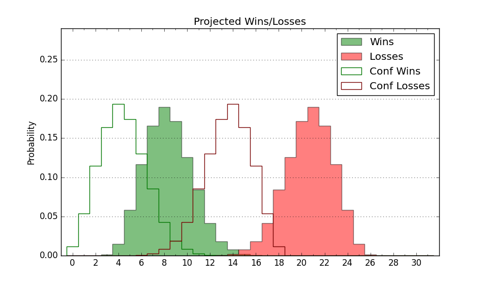

| Home | Game Probabilities | Conferences | Preseason Predictions | Odds Charts | NCAA Tournament |
| City: | Tulsa, Oklahoma | |
| Conference: | American (1st)
| |
| Record: | 0-0 (Conf) 3-7 (Overall) | |
| Ratings: | Comp.: -12.8 (298th) Net: -15.9 (319th) Off: 96.4 (302nd) Def: 112.3 (300th) SoR: 0.0 (211th) |
| Remaining | ||||||
|---|---|---|---|---|---|---|
| Date | Opponent | Win Prob | Pred. | |||
| 12/21 | Mississippi Valley St. (364) | 94.2% | W 75-56 | |||
| 1/1 | Rice (148) | 32.4% | L 67-72 | |||
| 1/4 | @ UAB (169) | 15.4% | L 72-85 | |||
| 1/7 | @ UTSA (238) | 24.3% | L 74-82 | |||
| 1/11 | Charlotte (179) | 39.7% | L 68-71 | |||
| 1/18 | @ South Florida (166) | 15.0% | L 67-80 | |||
| 1/21 | East Carolina (168) | 38.2% | L 67-70 | |||
| 1/26 | Wichita St. (101) | 21.9% | L 69-79 | |||
| 1/29 | UAB (169) | 38.2% | L 77-80 | |||
| 2/2 | @ Tulane (209) | 19.1% | L 68-78 | |||
| 2/5 | @ Memphis (30) | 1.8% | L 63-91 | |||
| 2/8 | Florida Atlantic (79) | 15.2% | L 73-86 | |||
| 2/12 | @ Temple (141) | 11.9% | L 65-79 | |||
| 2/15 | UTSA (238) | 52.2% | W 78-77 | |||
| 2/19 | @ North Texas (68) | 4.2% | L 55-75 | |||
| 2/22 | @ Rice (148) | 12.3% | L 62-76 | |||
| 3/1 | Tulane (209) | 44.5% | L 72-74 | |||
| 3/4 | Temple (141) | 31.6% | L 70-75 | |||
| 3/9 | @ Wichita St. (101) | 7.6% | L 65-83 | |||
| Previous | Game Score | |||||
| Date | Opponent | Win Prob | Result | Off | Def | Net |
| 11/9 | Arkansas Pine Bluff (362) | 90.9% | W 103-80 | 14.9 | -6.5 | 8.4 |
| 11/13 | Oral Roberts (300) | 65.1% | W 85-76 | 13.4 | 0.8 | 14.1 |
| 11/16 | @Missouri St. (192) | 17.4% | L 106-111 | 3.3 | 1.8 | 5.1 |
| 11/20 | Little Rock (256) | 55.6% | L 57-71 | -13.6 | -10.2 | -23.8 |
| 11/23 | @Loyola Chicago (111) | 8.2% | L 53-89 | -19.7 | -10.6 | -30.3 |
| 11/26 | (N) Detroit (317) | 54.9% | W 63-44 | -7.1 | 35.2 | 28.2 |
| 11/27 | (N) Georgia St. (268) | 42.1% | L 71-74 | -1.3 | 0.7 | -0.6 |
| 12/4 | Oklahoma St. (94) | 18.8% | L 55-76 | -21.4 | 5.7 | -15.7 |
| 12/7 | Southern (231) | 50.6% | L 66-70 | 2.4 | -7.6 | -5.2 |
| 12/14 | (N) UCF (96) | 12.0% | L 75-88 | 16.8 | -13.3 | 3.5 |
| Stats & Trends | |||||
|---|---|---|---|---|---|
| Current | Day | Week | Month | Season | |
| Composite | -12.8 | -0.4 | -1.5 | -8.2 | -8.4 |
| Comp Rank | 298 | -1 | -10 | -98 | -102 |
| Net Efficiency | -15.9 | -0.5 | -1.4 | -9.4 | -- |
| Net Rank | 319 | -- | -9 | -92 | -- |
| Off Efficiency | 96.4 | -0.1 | +1.6 | -15.8 | -- |
| Off Rank | 302 | +1 | +17 | -201 | -- |
| Def Efficiency | 112.3 | -0.4 | -3.0 | +6.4 | -- |
| Def Rank | 300 | -4 | -38 | +26 | -- |
| SoS Rank | 336 | -1 | +7 | +2 | -- |
| Exp. Wins | 8.4 | -0.1 | -0.6 | -3.7 | -3.3 |
| Exp. Conf Wins | 4.4 | -0.1 | -0.4 | -2.2 | -2.3 |
| Conf Champ Prob | 0.0 | -- | -0.0 | -0.8 | -1.2 |

| Advanced Stats | ||
|---|---|---|
| Stat | Value | Rank |
| Off Eff FG % | 0.449 | 327 |
| Off Ast Ratio | 0.126 | 282 |
| Off ORB% | 0.265 | 224 |
| Off TO Rate | 0.134 | 82 |
| Off FT Ratio | 0.366 | 111 |
| Def Eff FG % | 0.517 | 207 |
| Def Ast Ratio | 0.141 | 145 |
| Def ORB% | 0.319 | 292 |
| Def TO Rate | 0.125 | 311 |
| Def FT Ratio | 0.331 | 177 |